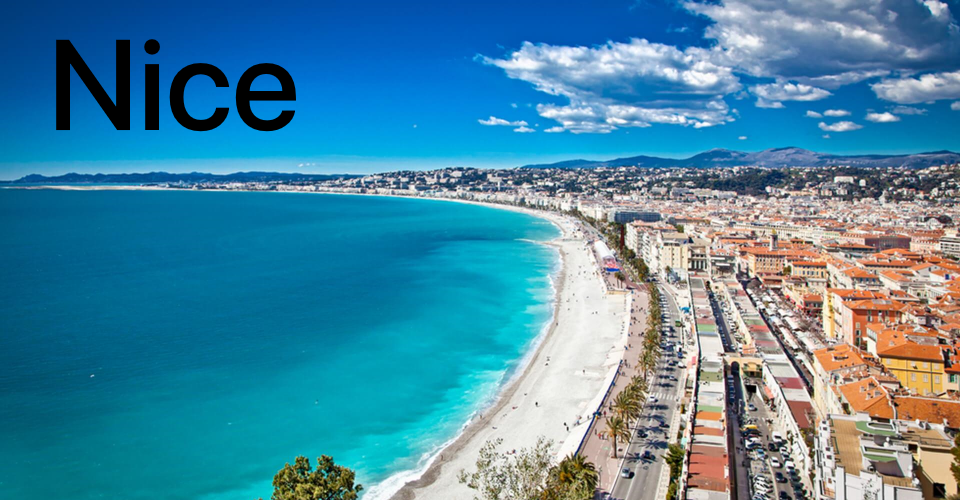
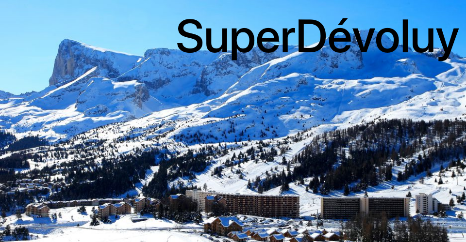

Something about me...
So, till my 4 years of my life I lived in Superdevoluy, France. I also learnt to ski in here.Then from 4 to 11 years I was living in a mountain village Valberg near the city Nice, also in France. Here I was skiing in competitions and played 1st golf league.
A professor from prince Rainer III. music academy in Monaco was regularly coming to the village to teach and lead me in playing to the piano.
Now it's 4 years that I live in the Czech Republic, Uherské Hradiště.
 